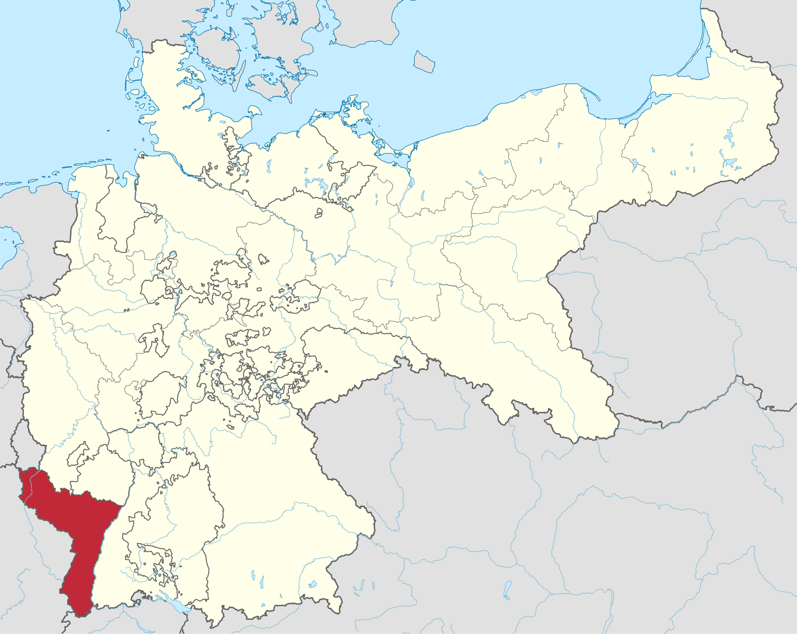
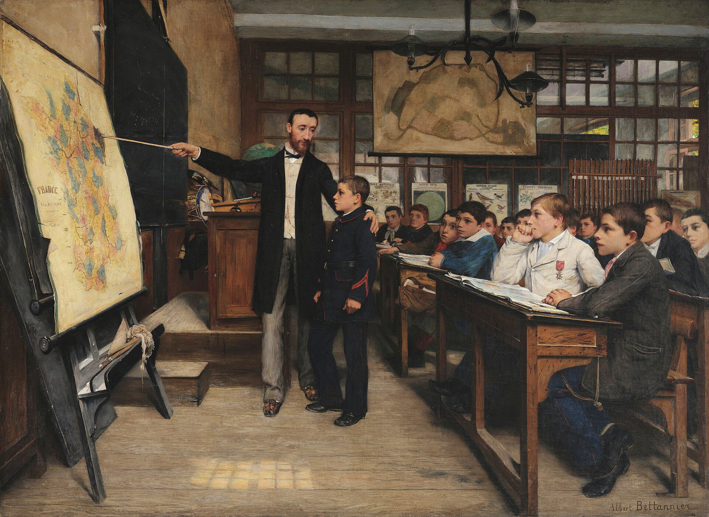

Complete Unit
KS3: Causes of the Great War
Course Textbook
Enquiry: How did decades of imperial rivalry and fear culminate in thirty days of madness?
Contents
|
Lesson 1: How was the German Empire created in 1871?
|
|
|
Lesson 2: How did the Franco-Prussian War create a lasting legacy of hatred?
|
|
|
Lesson 3: To what extent did the 'Scramble for Africa' increase tension in Europe?
|
|
|
Lesson 4: Why did a battleship building contest destroy Anglo-German relations?
|
|
|
Lesson 5: Did the Alliance System protect Europe or guarantee a global war?
|
|
|
Lesson 6: Why did a single assassination in Sarajevo ignite a World War?
|
|
L1: How was the German Empire created in 1871?[[SRC_MARKER:L0_Start]]
Learning Objectives
Understand how Otto von Bismarck used 'blood and iron' to unify the German states.
Analyze the geographical impact of the new German Empire on the balance of power in Europe.
Source S1: Cartographic Analysis — The German Empire (1871) vs Modern European Borders
This map illustrates the dramatic shift in European borders following the Franco-Prussian War in 1871. By uniting various independent German states into a single, massive German Empire under Prussian leadership, Otto von Bismarck completely altered the balance of power in Europe. This sudden creation of a massive, heavily armed, and highly industrialized powerhouse in the center of Europe deeply terrified its neighbors, setting the stage for future conflict.
Q1. Look at the A4 map provided. Why might the geographical location of the new German Empire cause fear for both Germany and its neighbors?
Vocabulary Check
The Odd One Out: Circle ONE term that does not belong with the others. Explain your reasoning: What historical connection links the other terms, and why is your chosen term different?
Chancellor | Blood and Iron
Teacher Model / Pupil Reasoning:
[[SRC_MARKER:L0_Source_0]]
Source S2: Map A: The German Empire in Central Europe (1871)

Geopolitical map showing the unification of thirty-nine sovereign German states into the German Empire under Prussian leadership in 1871.
[[SRC_MARKER:L0_Source_1]]
Source S3: Map B: Modern European Boundaries vs 1871 Frontiers

Comparative cartography overlaying 1871 German imperial boundaries onto modern sovereign European borders.
Today, Germany is one of the most powerful and successful industrial countries in Europe. But if you looked at a map of Europe in 1800, you would not find a country called "Germany" at all. Instead, you would see a messy patchwork of hundreds of small, independent states. In this lesson, you will discover the remarkable story of how a brilliant, ruthless statesman used "blood and iron" to crush his neighbours, unite these states, and create a brand-new superpower that would completely change the history of the world.
At the start of the 19th century, the German-speaking people were divided. In 1800, there were around 400 separate states making up what was known as the Holy Roman Empire, each with its own independent ruler. Following the Napoleonic Wars, these states were simplified and reduced to 39 states, forming a loose grouping known as the German Confederation in 1815.
Within this Confederation, the two largest and most powerful states—the Catholic empire of Austria and the militaristic kingdom of Prussia—constantly competed with each other for leadership.
In 1834, Prussia gained a massive economic advantage by setting up a free-trade customs union called the Zollverein. By removing internal customs barriers while keeping taxes on foreign imports, the Zollverein bound the smaller German states economically to Prussia while deliberately excluding Austria. Prussia had won the first round of the battle for dominance.
In 1862, a brilliant and fiercely conservative nobleman named Otto von Bismarck was appointed Chancellor of Prussia. Bismarck had a clear and single-minded goal: to exclude Austria from German affairs once and for all and unite the remaining German states under Prussian leadership.
Bismarck despised the slow, democratic methods of speeches and parliaments. In his very first speech as Chancellor, he warned the Prussian parliament of his plans:
>
"Germany is not looking to Prussia’s liberalism, but to her power... The great questions of the day will not be decided by speeches and resolutions of majorities... but by blood and iron."
By "blood," Bismarck meant the lives of soldiers; by "iron," he meant the advanced technology of Prussia’s military machine, including its modern railways, artillery, and rapid-firing guns. From the mid-nineteenth century, Prussia built up a massive, exceptionally well-trained, and highly disciplined army. Bismarck was ready to unleash it.
[[SRC_MARKER:L0_Task_2_0]]Q2. Interpreting 'Blood and Iron'. In your own words, explain what Otto von Bismarck meant when he said Germany would be united by 'blood and iron'. How did Prussia use its industrial and military power to prove Bismarck’s speech right between 1864 and 1871?
To unite Germany, Bismarck orchestrated three short, decisive wars over a seven-year period:
*
War 1: The Danish War (1864): Prussia teamed up with Austria to quickly defeat Denmark in a dispute over territory, showing off their military coordination.
*
War 2: The Austro-Prussian War (1866): Bismarck turned on his former ally, Austria. The modernized Prussian army crushed the Austrian forces in just seven weeks. Following this defeat, Austria was completely excluded from German affairs, leaving Prussia as the undisputed leader of the German states.
*
War 3: The Franco-Prussian War (1870–1871): To convince the southern German states (who were wary of Prussian dominance) to join his new union, Bismarck needed a common enemy. He cleverly provoked a war with France. The Prussian military machine invaded France, totally destroyed the French armies, and captured the French Emperor.
[[SRC_MARKER:L0_Task_3_0]]Q3. The Steps to Unification. Create a three-step staircase diagram in your book to show how Bismarck built the German Empire. For each step, write down: 1. The name of the country Prussia defeated. 2. The year of the war. 3. How this war helped Prussia achieve its ultimate goal of unification.
Having defeated France, Bismarck successfully united the remaining independent northern and southern German states into a single, massive German Empire (the Kaiserreich).
To add ultimate humiliation to France's defeat, Bismarck arranged for the King of Prussia, Wilhelm I, to be officially proclaimed the first German Emperor (Kaiser) on 18 January 1871 inside the Hall of Mirrors at the Palace of Versailles—the historic home of French kings.
As part of the peace treaty, Germany also seized Alsace-Lorraine, a highly valuable French industrial region rich in coal and iron. While Germany celebrated its spectacular unification, French citizens looked on with deep bitterness. This land grab created a furious, long-term rivalry between Germany and France that would eventually help spark the First World War forty years later.
Consolidation Task
[[SRC_MARKER:L0_Task_5_0]]Q4. Explain why Bismarck's policy of 'Blood and Iron' was successful in uniting Germany.
Pair & Share Activity
Q5. Discuss with your partner: Was the German Empire created 'from below' by the people or 'from above' by military force?
L2: How did the Franco-Prussian War create a lasting legacy of hatred?[[SRC_MARKER:L1_Start]]
Learning Objectives
Identify the penalties forced upon France in 1871.
Explain how the Ems Telegram sparked the Franco-Prussian War.
Evaluate the long-term impact on European relations.
Source S1: Anton von Werner’s Masterwork — The Proclamation of the German Empire (Versailles, 18 January 1871)
Anton von Werner’s famous 1885 painting depicting the official birth of the unified German Empire inside the Hall of Mirrors at the Palace of Versailles. Chancellor Otto von Bismarck stands prominently in the centre in his gleaming white cuirassier uniform, surrounded by German princes and generals cheering Kaiser Wilhelm I on the dais with raised sabres. Holding this triumphal coronation in the historic heart of French royal power was a calculated national humiliation of France that sparked decades of burning French resentment (revanche).
Q1. What are the two opposing figures doing in this 1871 painting by Anton von Werner, and why is this event significant?
Chronological Domino Flowchart
Task: The historical events below are out of order. Read them carefully, then use your pen to draw arrows connecting the boxes in the correct chronological and causal order (Event A ➔ Event B ➔ Event C...).
June 1914
The Spark in Sarajevo
The Assassination of the Archduke
1897
Imperial Rivalries
The Place in the Sun speech
1906
The Naval Arms Race
The Launch of HMS Dreadnought
1871
The Unification of Germany
The Franco-Prussian War
1907
Encirclement & Alliances
The Triple Entente System
1. Looking at this long-term timeline, which factor do you think was the most dangerous necessary cause of the war?
Vocabulary Check
The Golden Sentence: Choose TWO terms from the word bank. Write ONE grammatically sophisticated, historically accurate sentence connecting them using a causal conjunction (because, although, or consequently):
Chancellor | Blood and Iron | Revanche | Annexation | Indemnity | Two-Front War | North German Confederation | Reinsurance Treaty
Teacher Model / Pupil Sentence:
[[SRC_MARKER:L1_Source_0]]
Source S2: Map A: The Annexation of Alsace-Lorraine (Treaty of Frankfurt, 1871)

Map showing the strategic borderland of Alsace-Lorraine (Reichsland Elsaß-Lothringen), seized from France by Otto von Bismarck following the Franco-Prussian War of 1870–71.
[[SRC_MARKER:L1_Source_1]]
Source S3: The Black Spot (La Tache Noire) by Albert Bettannier (1887)

Albert Bettannier’s iconic 1887 painting (Musée d’Orsay) showing a French schoolmaster in a black coat pointing with a wooden pointer to the blacked-out region of Alsace-Lorraine on a classroom map of France. A young French boy in a cadet uniform stands attentively beside him while solemn schoolmates look on, illustrating how an entire generation of French schoolchildren was educated to prepare for revenge (revanche) against Germany.
In 1871, a dramatic event shocked Europe. Prussia defeated France in the Franco-Prussian War. Prussian Chancellor Otto von Bismarck united thirty-nine independent German states into a single, powerful German Empire. This sudden victory destroyed the old balance of power. France lost vital land and wealth. A bitter rivalry began between France and Germany. This rivalry would poison European peace for over forty years.
Before 1871, there was no single country called Germany. Instead, central Europe was divided into dozens of independent states. They shared a common language and customs, but had separate rulers. The northern kingdom of Prussia was the strongest military power. Prussia was led by Chancellor Otto von Bismarck. Bismarck first united the northern states into the
North German Confederation. However, the southern German states remained independent. Bismarck needed a clever plan to unite the north and south. He believed that a shared foreign enemy would force all Germans to unite under Prussian leadership.
[[SRC_MARKER:L1_Task_1_0]]Q2. To what extent did the maps of central Europe fundamentally change prior to 1871? Use the term "North German Confederation" in your answer.
In July 1870, Bismarck found his opportunity. King Wilhelm I of Prussia met with the French ambassador at the spa town of Bad Ems. The King sent Bismarck a telegram describing their polite meeting. Bismarck cleverly altered the message. He shortened the sentences to make it sound like the King had insulted France. Bismarck then leaked this edited
Ems Telegram to newspapers across Europe. The French public was furious. French Emperor Napoleon III fell directly into Bismarck's trap and declared war on Prussia. The independent southern German states immediately rushed to support Prussia.
[[SRC_MARKER:L1_Task_2_0]]Q3. Describe the diplomatic trick Chancellor Otto von Bismarck used to manufacture a war with France in 1870.
The Prussian army defeated France with remarkable speed. First, Prussia used an
advanced railway network to move 500,000 soldiers to the border in days. France mobilized much more slowly. Second, the Germans used heavy
Krupp steel artillery. These Krupp guns fired explosive shells much faster and further than French bronze cannons. German forces surrounded the main French army at the Battle of Sedan on 1 September 1870. The French suffered 17,000 casualties. Over 21,000 French soldiers were captured, including Emperor Napoleon III himself. Paris was besieged during a bitter winter and finally surrendered on 28 January 1871.
[[SRC_MARKER:L1_Task_3_0]]Q4. Identify two distinct military advantages that allowed the Prussian-led German army to quickly defeat the conventional French forces.
The German victory permanently altered European history. On 18 January 1871, the German princes gathered in the Palace of Versailles. Inside the historic Hall of Mirrors, they proclaimed King Wilhelm I as German Emperor. Choosing the French royal palace was a deliberate, agonizing insult to France. In the Treaty of Frankfurt, Germany forced three brutal penalties on France. First, France had to hand over the rich border regions of
Alsace-Lorraine. Second, France was forced to pay a huge war indemnity of
5 billion francs. Third, France was forced to host a
German occupation army until the fine was paid.
[[SRC_MARKER:L1_Task_4_0]]Q5. List the three severe penalties forced upon France by the victorious German Empire in the 1871 peace treaty.
These cruel peace terms created a dangerous legacy. French citizens felt deeply humiliated. They demanded
revanche (revenge) to win back Alsace-Lorraine. In French schools, pupils were taught never to forget the lost provinces. Bismarck realized he had created a permanent enemy. He feared that France would seek revenge. His greatest nightmare was a
two-front war (fighting enemies on two opposite borders at once). If France allied with Russia, Germany would be trapped in the middle and attacked from both the west and the east.
[[SRC_MARKER:L1_Task_5_0]]Q6. Explain why the loss of Alsace-Lorraine and the ceremony at Versailles created a long-term "nightmare" for European peace.
To protect Germany, Bismarck worked tirelessly for twenty years. His main strategy was to keep France completely isolated without allies. In 1882, he built the Triple Alliance between Germany, Austria-Hungary, and Italy. In 1887, he signed a secret treaty with Russia called the Reinsurance Treaty. This guaranteed that Russia and Germany would not attack each other. Bismarck was a master diplomat. He kept peace by making sure Germany always had more friends than enemies.
In 1888, a young and ambitious new emperor took power: Kaiser Wilhelm II. The new Kaiser wanted personal glory and dismissed Bismarck in 1890. Wilhelm made a disastrous mistake. He refused to renew the secret Reinsurance Treaty with Russia. Isolated and desperate for a friend, Russia turned to France. In 1894, France and Russia signed a military alliance. Bismarck's worst nightmare had come true. Germany was now surrounded by two powerful rivals. The German army immediately began planning for a two-front war.
Consolidation Task
[[SRC_MARKER:L1_Task_8_0]]Q7. Explain why the Franco-Prussian War created a lasting legacy of hatred between France and Germany.
Pair & Share Activity
Q8. Of the three penalties forced upon France in the 1871 treaty (loss of land, 5 billion franc fine, German occupation), which do you think caused the most bitter resentment, and why?
Q9. Evaluate how the change in leadership from Bismarck to Kaiser Wilhelm II fundamentally altered Germany's strategic position in Europe.
GCSE Exam Practice
Q10. How useful are Sources A and B for an enquiry into the reasons for French hatred of Germany after 1871?
“We must never forget the humiliation of 1871. The German Empire was proclaimed in our own Palace of Versailles, tearing away the bleeding wounds of Alsace and Lorraine. They have stolen our iron and our factories, and forced us to pay a crushing ransom of 5 billion francs. Every French child must grow up with one single thought: to rebuild our army and take back what was stolen from the motherland.”
Source A: Adapted from a French school textbook, published in Paris, 1885.
“France will never forgive us for taking Alsace-Lorraine. The peace we have forced upon them has left a bitter resentment that will not fade. We must accept that a French war of revenge is a certainty in the future. Therefore, our entire diplomatic focus must be to ensure she never finds an ally to help her take it back. As long as France remains diplomatically isolated, particularly from Russia, Germany will remain secure.”
Source B: Adapted from a private letter written by German Chancellor Otto von Bismarck to a fellow diplomat, 1872.
L3: To what extent did the 'Scramble for Africa' increase tension in Europe?[[SRC_MARKER:L2_Start]]
Learning Objectives
Identify the main European colonial powers and their territories.
Explain how Kaiser Wilhelm II's 'Place in the Sun' policy threatened Britain.
Evaluate the impact of the Moroccan Crises on the Entente Cordiale.
Source S1: John Tenniel’s Satirical Cartoon — 'The Greedy Boy' (Punch Magazine, 10 January 1885)
This British cartoon satirizes Germany's Chancellor Otto von Bismarck as a "greedy boy" grabbing slices of a pudding that represents colonial territories in Africa and New Guinea. This reflects British anxiety and suspicion about Germany's aggressive efforts to build a global empire, which threatened Britain's status as the world's leading power.
Q1. Look closely at the man standing over Africa. What is his posture suggesting about imperial ambitions?
Do Now Activity (Prior Knowledge Recall)
1. Who was the first Emperor of the newly unified Germany in 1871?
2. Which brilliant Chancellor united the German states?
3. Which country was humiliatingly defeated in the Franco-Prussian War?
4. What strategic border territory did Germany take in 1871?
5. What is the French word for their desire for revenge?
6. Explain how Bismarck used the Ems Telegram to trap France into a war.
7. Detail the two military advantages the Prussian army possessed.
8. Why was the location of the German Empire's proclamation so humiliating for France?
9. Why did Bismarck weave a complex web of secret alliances after 1871?
10. What was Bismarck's ultimate nightmare scenario?
Vocabulary Check
Conceptual Classification: Categorise the terms from the word bank into the two historical boxes below:
Imperialism | Scramble for Africa | Weltpolitik | Place in the Sun | Entente Cordiale | Algeciras Conference | Agadir Crisis | Gunboat Diplomacy | Berlin Conference | Congo Free State
Power, Governance & Warfare
Economy, Trade & Society
[[SRC_MARKER:L2_Source_0]]
Source S2: Map A: The Partition of Africa at the Outbreak of War (1914)

Curriculum reference map illustrating the complete division of the African continent following thirty years of imperial expansion under the Berlin Act of 1885.
[[SRC_MARKER:L2_Source_1]]
Source S3: Map B: Walter Crane’s Imperial Federation Map of the World (1886)

Walter Crane’s famous 1886 world map showing the extent of the British Empire (coloured in red), maritime shipping routes, and global telegraph cables, framed by figures representing the colonies.
In 1905, Kaiser Wilhelm II sailed to Tangier in Morocco. He backed Moroccan independence against French rule. The Kaiser expected Britain and France to quarrel and split. Instead, his risky gamble backfired. At the 1906 Algeciras Conference, Britain firmly backed France. Germany was left isolated and humiliated. In 1911, the Kaiser sent a German warship to Agadir in Morocco. Once again, Britain stood by France and prepared the Royal Navy for war. The Kaiser's clumsy gunboat diplomacy convinced both nations that Germany was a dangerous threat.
By 1900, European Great Powers were racing to build overseas empires. This fierce race was known as Imperialism. Possessing colonies gave a country great status, wealth, and global power. Every colony provided cheap raw materials to feed European factories. In return, colonies bought European factory goods. In 1884, European leaders met at the Berlin Conference. They divided the African continent among themselves on a map. No African leaders were invited to the meeting. The Congo Free State suffered harsh cruelty under King Leopold II of Belgium.
[[SRC_MARKER:L2_Task_1_0]]Q2. Explain two distinct economic reasons why possessing overseas colonies was vital to the industrial growth of a Great Power.
Great Britain ruled the largest empire in human history. As an island nation, Britain relied entirely on open sea routes. Thousands of British merchant ships sailed the oceans every day. The Royal Navy protected these vital global trade routes from rival fleets. Crucially, Britain controlled the Suez Canal in Egypt. This canal was the vital sea shortcut to India. Any challenge to British naval power was seen as a direct threat to survival. France held the second-largest empire, mainly in North and West Africa. France had lost Alsace-Lorraine to Germany in 1871. French leaders fiercely guarded their colonies to restore national pride. In 1898, Britain and France nearly fought over Sudan during the tense Fashoda Incident.
[[SRC_MARKER:L2_Task_2_0]]Q3. Why did French politicians feel it was absolutely vital to maintain a firm hold on their remaining global colonies after 1871?
European peace was shaken when Germany entered the imperial race. Germany had only unified in 1871. However, German factories and steel mills were expanding at unmatched speed. Kaiser Wilhelm II wanted Germany to match the global influence of Britain and France. He launched an ambitious new foreign policy called Weltpolitik. On 6 December 1897, Foreign Secretary Bernhard von Bülow gave a famous speech in parliament. He declared that Germany would no longer stand in the shadows. He boldly demanded Germany's own place in the sun.
Germany rapidly seized lands across Africa and the Pacific. These colonies included Cameroon, Togo, German East Africa, and Kaiser-Wilhelmsland in New Guinea. However, German leaders wanted an even larger world empire. To protect these distant colonies, Germany began building a huge battle fleet. This naval build-up deeply alarmed Great Britain. British leaders feared Germany wanted to destroy the Royal Navy. Meanwhile, German leaders believed Britain was an arrogant barrier blocking Germany's rightful rise.
[[SRC_MARKER:L2_Task_4_0]]Q4. Explain how Germany’s sudden desire to build a naval fleet to protect its new colonies acted as a cause of friction with Great Britain.
[[SRC_MARKER:L2_Task_4_1]]Q5. What specific geographical territory did Foreign Secretary Bernhard von Bülow target when he demanded a "place in the sun" for Germany?
In 1904, Britain and France signed a historic treaty called the Entente Cordiale. This agreement settled their old colonial disputes in North Africa. France recognised British rule in Egypt. In return, Britain accepted French influence in Morocco. Kaiser Wilhelm II was furious about this friendly partnership. He feared that Britain and France were plotting to encircle Germany. The Kaiser decided to test the new alliance. He believed Britain would never risk war to defend French interests in North Africa.
In March 1905, the Kaiser arrived in Tangier, Morocco. He rode through the streets on a white horse. Wilhelm announced that he supported the Sultan of Morocco as an independent ruler. He demanded an international conference to settle the Moroccan crisis. The Kaiser hoped to humiliate France and break the Anglo-French friendship. However, his gamble failed completely. At the 1906 Algeciras Conference, Britain strongly supported France. Germany was left isolated, backed only by Austria-Hungary.
In 1911, the Kaiser triggered a second dangerous standoff known as the Agadir Crisis. France sent troops to Morocco to put down a rebellion. Germany claimed this broke the Algeciras agreement. In response, Wilhelm sent a gunboat, the SMS Panther, to the Moroccan port of Agadir. The Kaiser tried to use gunboat diplomacy to bully France into giving up land in the Congo. Britain was furious at this German aggression. Chancellor David Lloyd George warned that Britain would fight rather than let Germany dominate Europe. The Royal Navy was placed on alert for war. Germany backed down in exchange for small strips of swamp in Central Africa. The crisis proved to Britain and France that Germany was an unpredictable and dangerous threat.
Consolidation Task
[[SRC_MARKER:L2_Task_9_0]]Q6. Explain how the 'Scramble for Africa' increased tension between European powers.
Pair & Share Activity
Q7. If you were a British politician in 1897, would you view Kaiser Wilhelm's 'Place in the Sun' speech as a direct threat, or just a young leader showing off? Why?
Q8. Explain why Kaiser Wilhelm's strategy of testing the Entente Cordiale during the Moroccan Crises was a massive strategic failure for Germany.
GCSE Exam Practice
Q9. How useful are Sources A and B for an enquiry into the impact of Weltpolitik on international relations?

Source A: Source A: 'The Greedy Boy', a British political cartoon published in 1885 showing German Chancellor Otto von Bismarck.
“We do not want to put anyone in the shade, but we too demand our place in the sun.”
Source B: Speech by German Foreign Minister Bernhard von Bülow to the Reichstag, 1897.
L4: Why did a battleship building contest destroy Anglo-German relations?[[SRC_MARKER:L3_Start]]
Learning Objectives
Identify the significance of the HMS Dreadnought.
Explain the concept of the Two-Power Standard and Risk Theory.
Analyze how naval competition fed mutual suspicion.
Source S1: Admiral Sir John Fisher's Secret Memorandum to King Edward VII (1906)
Confidential strategic memorandum authored by First Sea Lord Sir John Fisher submitted to King Edward VII, detailing the tactical superiority and deterrent purpose of HMS Dreadnought.
Q1. According to Admiral Fisher, why did Britain require a fleet 'twice as powerful' concentrated within hours of Germany?
Do Now Activity (Prior Knowledge Recall)
1. What was the name of Kaiser Wilhelm II's aggressive foreign policy?
2. Explain how Wilhelm II's actions during the Moroccan Crises backfired on Germany.
3. Why was the Franco-Russian Alliance a strategic disaster for Germany?
4. Evaluate how the 'Scramble for Africa' increased tensions in Europe.
5. Describe the impact of Britain abandoning its policy of 'Splendid Isolation'.
6. Evaluate the role of Wilhelm II's personality in destabilizing Europe.
7. Who dismissed Otto von Bismarck in 1890?
8. What strategic territory did Germany take from France in 1871?
9. Why did Bismarck weave a complex web of secret alliances after 1871?
10. What was Bismarck's ultimate nightmare scenario?
Vocabulary Check
Spot the Deliberate Error: Read the statement below. One historical fact or vocabulary concept has been deliberately falsified. Underline the error and explain the accurate historical reality below:
Naval Supremacy | Two-Power Standard | Arms Race | Dreadnought | German Navy Laws | Navy League | Grand Fleet | High Seas Fleet | Kiel Canal | Scapa Flow
Challenge: Write ONE statement containing a deliberate historical misconception using Naval Supremacy or Two-Power Standard. Identify and correct the error:
Teacher Model / Historical Correction:
[[SRC_MARKER:L3_Source_0]]
Source S2: Admiral Sir John Fisher's Secret Memorandum to King Edward VII (1906)
“Our only probable enemy is Germany. Germany keeps her whole fleet concentrated within a few hours of England. We must therefore keep a fleet twice as powerful concentrated within a few hours of Germany... HMS Dreadnought can sink the whole existing German Navy. She runs at 21 knots, carries ten 12-inch guns, and can hit the enemy at eight miles before they can even reach us. Speed is armor. Hit first, hit hard, and keep on hitting.”
Confidential strategic memorandum authored by First Sea Lord Sir John Fisher submitted to King Edward VII, detailing the tactical superiority and deterrent purpose of HMS Dreadnought.
[[SRC_MARKER:L3_Source_1]]
Source S3: L.M. Glackens: "NO LIMIT" (Puck Magazine, September 1909)

Satirical American cartoon illustrating the ruinous escalation of the Anglo-German naval arms race, with John Bull and Kaiser Wilhelm raising the stakes with battleships.
[[SRC_MARKER:L3_Source_2]]
Source S4: Map A: The North Sea & Naval Chokepoints (Strategic Hydrographic Map)

Strategic hydrographic reference map of the North Sea showing the shallow German Bight, the English Channel bottleneck, and the northern naval blockade patrol lines between Scotland and Norway.
For a century, Great Britain ruled the oceans. The Royal Navy was the strongest fleet on earth. However, in 1898, Kaiser Wilhelm II decided to challenge British sea power. He began building a massive German battle fleet. In 1906, Britain launched a revolutionary warship named HMS Dreadnought. It was faster and more heavily armoured than any ship in history. Yet this super-battleship created an unexpected problem. It made all older battleships obsolete overnight. Britain's massive naval lead was instantly wiped out. Germany could now challenge Britain on equal terms to build dreadnoughts.
Following the Battle of Trafalgar in 1805, Great Britain dominated the world's oceans without challenge. Britain was an island nation with a vast global empire. It relied on naval supremacy to protect trade routes and defend its shores. Britain followed a strict policy called the Two-Power Standard. This rule stated that the Royal Navy must always be as large as the next two biggest navies combined. To British leaders, naval supremacy was essential for national survival.
[[SRC_MARKER:L3_Task_1_0]]Q2. Describe the 'Two-Power Standard' and explain why Great Britain adhered to this strict naval policy.
Everything changed in 1898 when Kaiser Wilhelm II set out to build a powerful German navy. The Kaiser believed Germany required a great battle fleet to become a true world power. In 1898 and 1900, Germany passed the historic German Navy Laws. These laws ordered shipyards to build 19 battleships in the first law and 38 more in the second. Admiral Alfred von Tirpitz directed the build-up. He established the Navy League to build public support. This patriotic league organised shipyard tours and delivered lectures to inspire civilian enthusiasm.
[[SRC_MARKER:L3_Task_2_0]]Q3. Detail what the German Navy Laws of 1898 and 1900 explicitly ordered the German industrial shipyards to construct.
[[SRC_MARKER:L3_Task_2_1]]Q4. Explain how Admiral Tirpitz used the Navy League to manufacture civilian support and patriotism for Germany's expanding fleet.
[[SRC_MARKER:L3_Task_2_2]]Q5. Explain why maintaining a massive navy was a matter of survival for Great Britain, but was viewed as a matter of status and power for Germany.
British politicians were deeply alarmed by Germany's naval expansion. They believed the German High Seas Fleet was designed specifically to fight Britain. British leaders pointed out a fundamental difference between the two nations. For Britain, a massive navy was essential to secure food imports and trade. For Germany, a huge standing army already protected its borders on land. A German battle fleet seemed to Britain like a weapon created for war.
Britain responded to the German challenge by designing the ultimate warship. In 1906, Britain launched HMS Dreadnought. The ship possessed thick steel armour and ten heavy 12-inch guns in rotating turrets. It used steam turbine engines to travel faster than any rival battleship. The vessel was so advanced that it made all existing battleships obsolete overnight. However, this wiped out Britain's advantage. Germany immediately began building its own dreadnoughts, beginning with SMS Rheinland. By 1914, Germany had doubled its fleet, becoming the second-largest naval power in the world.
[[SRC_MARKER:L3_Task_4_0]]Q6. Identify three specific technological features of HMS Dreadnought that made it superior to all previous warships.
This competitive naval race produced a tense standoff in the North Sea. The British Grand Fleet was stationed at its main base at Scapa Flow in northern Scotland. The German High Seas Fleet was based at Wilhelmshaven on the North Sea coast. Both navies prepared for a huge, decisive sea clash. To move its dreadnoughts rapidly between the Baltic and North Seas, Germany widened the Kiel Canal. This huge project was finished in 1914, just weeks before the outbreak of war.
Before 1906, Britain felt secure behind the Two-Power Standard. German shipyards struggled to match Britain's hundreds of older warships. However, launching HMS Dreadnought accidentally levelled the playing field. Because older warships no longer counted in battle, both empires were forced to restart the race from scratch.
HMS Dreadnought was a triumph of British engineering. Its uniform battery of 12-inch guns could fire at extreme ranges. Its heavy armour resisted enemy shells, and its steam turbines delivered unmatched speed. Yet it contained a fatal strategic flaw. By showing that older warships were useless, Britain made its own huge fleet obsolete.
Germany seized this historic chance at once. The naval competition transformed into a contest to build modern dreadnought-class vessels. German shipyards worked day and night to rival British production. In Britain, alarmed citizens demanded more warships with the famous slogan: 'We want eight and we won't wait!' This bitter naval race drained national budgets and created toxic distrust between Britain and Germany.
[[SRC_MARKER:L3_Task_8_0]]Q7. Explain how the launching of HMS Dreadnought in 1906 represented an industrial turning point in the naval arms race, rather than maintaining the status quo.
Consolidation Task
[[SRC_MARKER:L3_Task_9_0]]Q8. Explain why the naval race between Britain and Germany damaged their relations.
Pair & Share Activity
Q9. Who do you think was more to blame for the naval arms race: Germany for building a fleet they didn't strictly need, or Britain for refusing to share control of the seas?
Q10. How did the invention of the HMS Dreadnought ironically endanger British naval supremacy despite being a British invention?
GCSE Exam Practice
Q11. How useful are Sources A and B for an enquiry into the effects of the Anglo-German naval arms race?
“Our only probable enemy is Germany. Germany keeps her whole fleet concentrated within a few hours of England. We must therefore keep a fleet twice as powerful concentrated within a few hours of Germany... HMS Dreadnought can sink the whole existing German Navy. She runs at 21 knots, carries ten 12-inch guns, and can hit the enemy at eight miles before they can even reach us. Speed is armor. Hit first, hit hard, and keep on hitting.”
Source A: Admiral Sir John Fisher's Secret Memorandum to King Edward VII, October 1906.
“We want eight, and we won't wait!”
Source B: Popular British political slogan chanted by the public in 1909.
L5: Did the Alliance System protect Europe or guarantee a global war?[[SRC_MARKER:L4_Start]]
Learning Objectives
Identify the members of the Triple Alliance and the Triple Entente.
Explain why countries felt the need to form secret defensive treaties.
Evaluate how the alliance system could drag all of Europe into a regional conflict.
Source S1: Nelson Harding’s Editorial Cartoon — 'The Chain of Friendship' (July 1914)
Editorial cartoon published in the Brooklyn Daily Eagle (July 1914) satirising how the rigid system of European treaty obligations dragged one nation after another into war.
Q1. Study the intertwined hands and figures in this cartoon. What does it suggest about how a local conflict might spread?
Do Now Activity (Prior Knowledge Recall)
1. What revolutionary British battleship was launched in 1906?
2. What was the 'Two-Power Standard'?
3. Why did Germany feel it needed a massive high seas fleet?
4. Explain how the invention of the Dreadnought ironically hurt British supremacy.
5. What was the popular British slogan chanted by the public in 1909?
6. Why did Britain feel their survival depended on massive naval supremacy?
7. How did the Anglo-German naval race make war more likely?
8. What was the name of Kaiser Wilhelm II's aggressive foreign policy?
9. Explain how Wilhelm II's actions during the Moroccan Crises backfired on Germany.
10. Evaluate how the 'Scramble for Africa' increased tensions in Europe.
Vocabulary Check
The Odd One Out: Circle ONE term that does not belong with the others. Explain your reasoning: What historical connection links the other terms, and why is your chosen term different?
Triple Alliance | Triple Entente | Encirclement | Blank Cheque | Schlieffen Plan | Mobilisation | Armed Camps | Preventative War | Reinsurance Treaty
Teacher Model / Pupil Reasoning:
[[SRC_MARKER:L4_Source_0]]
Source S2: Diagram A: The European Alliance System Matrix (1879–1914)

Curriculum analytical matrix mapping the interlocking bilateral and multilateral mutual defence pacts dividing Europe into the Triple Alliance and Triple Entente.
[[SRC_MARKER:L4_Source_1]]
Source S3: Map A: European Military Alliance Blocs & Ethno-National Minorities (1914)

Geopolitical reference map of Europe in 1914 showing the central bloc of the Central Powers (brown) surrounded by the Triple Entente (green), highlighting the volatile ethnic fault lines within Austria-Hungary.
Q2 Look at the geographical position of Germany and Austria-Hungary. Why would they feel encircled by the Triple Entente?
By 1914, Europe was divided into two hostile armed camps. On 5 July 1914, Kaiser Wilhelm II issued the famous 'Blank Cheque' to Austria-Hungary. This was an unconditional promise of total German military backing against Serbia. Historians still debate why Germany gave this reckless promise. Some argue the Kaiser acted out of personal loyalty to his murdered friend. Others argue the German High Command used the crisis to force a war. German generals feared that Russia's army was modernising rapidly. They believed that if war was coming, Germany must strike before Russia grew too strong.
As European empires expanded, rival nations grew suspicious of each other. European leaders looked for ways to protect their borders from sudden attack. Their main strategy was to sign binding military alliances. Over several decades, Europe was carved into two heavily armed, opposing camps. Instead of creating lasting peace, this web of treaties created a dangerous trap.
By 1907, the alliance system had split Europe into two rival groups. On one side stood the Triple Alliance, formed in 1882 by Germany, Austria-Hungary, and Italy. On the opposing side was the Triple Entente, uniting Great Britain, France, and Russia. Diplomats argued that this balance of power would keep the peace. Their logic was simple. Attacking one nation would trigger an immediate war against all its allies. Leaders believed no country would be foolish enough to start such a terrible conflict.
[[SRC_MARKER:L4_Task_2_0]]Q3. Identify the specific member countries that made up the Triple Alliance and the Triple Entente by 1907.
[[SRC_MARKER:L4_Task_2_1]]Q4. Explain the diplomatic logic of how the alliance system was theoretically supposed to keep European nations safe from a outbreak of war.
However, the alliance system bred deep fear rather than safety. German leaders viewed the Triple Entente as a hostile ring designed to encircle Germany. Crucially, military leaders like Austria's Conrad von Hötzendorf believed a European war was inevitable and necessary. German generals feared that Russia was building railways and modernising its army at rapid speed. They believed Germany must fight before Russia became unbeatable. This fear drove the Schlieffen Plan. This plan aimed to defeat France in six weeks before turning east to face Russia.
[[SRC_MARKER:L4_Task_3_0]]Q5. According to Germany's military leaders, explain why a European war was considered "inevitable and necessary" rather than avoidable.
At the same time, European factories fueled a massive arms race on land. Between 1906 and 1914, German steel production surged to over 17 million tonnes, far outpacing Britain and France. Steel mills forged heavy artillery, machine guns, and millions of rifle shells. Thousands of miles of new railway tracks were laid across Europe. These tracks allowed armies to move hundreds of thousands of troops to the front line in days. Europe had become a powder keg waiting for a single spark.
[[SRC_MARKER:L4_Task_4_0]]Q6. Detail how the massive expansion of steel production and railway tracks across Europe altered the speed and scale of army mobilization.
[[SRC_MARKER:L4_Task_4_1]]Q7. Explain how the transformation of Europe into two "armed camps" by 1914 represented a dangerous change in international relations compared to the traditional balance of power.
Use the IDEA framework to structure your response.
In July 1914, that spark arrived in the Balkans. Following the assassination of Archduke Franz Ferdinand, Austria-Hungary wanted to crush Serbia. However, Austrian leaders feared that Russia would step in to protect Serbia. To act safely, Austria needed a guarantee of German backing. On 5 July 1914, Kaiser Wilhelm II gave Austria-Hungary the 'Blank Cheque'. This was a promise of unconditional support, even if war broke out with Russia.
The 'Blank Cheque' remains one of the most debated actions in modern history. Some historians argue the Kaiser acted impulsively out of friendship. They note that Wilhelm went on a sailing holiday right after making the promise. This suggests he did not expect a world war to erupt.
However, other historians argue that the German High Command deliberately pushed Austria into war. German generals knew Russia's military was growing stronger every month. If a major European war was inevitable, they wanted to fight it in 1914 rather than wait. By giving Austria unconditional support, Germany ensured the crisis would explode into a total European war.
Consolidation Task
[[SRC_MARKER:L4_Task_8_0]]Q8. Explain how the Alliance System contributed to the outbreak of the First World War.
Pair & Share Activity
Q9. Imagine you are an ordinary Serbian citizen in 1908. Why would Austria-Hungary's aggressive takeover of Bosnia make you feel personally threatened?
Q10. Was the 'Blank Check' a reckless mistake by the Kaiser, or a calculated move by the German military to trigger a necessary war? Use historical reasoning to justify your stance.
GCSE Exam Practice
Q11. How useful are Sources A and B for an enquiry into the threat posed by Serbia to Austria-Hungary?

Source A: Map of the Balkans showing the borders of Serbia and the Austro-Hungarian Empire in 1914.
“Serbia is a viper that must be crushed. If we do not destroy them now, our empire will be torn apart by Slavic nationalism.”
Source B: Diary entry of the Austro-Hungarian Chief of Staff, Conrad von Hötzendorf, 1913.
L6: Why did a single assassination in Sarajevo ignite a World War?[[SRC_MARKER:L5_Start]]
Learning Objectives
Identify the events of 28 June 1914.
Explain how the assassination triggered the alliance system.
Analyze whether the resulting war was inevitable or accidental.
Source S1: Leonard Raven-Hill’s Satirical Cartoon — 'The Boiling Point' (Punch Magazine, 2 October 1912)
Leonard Raven-Hill's celebrated 1912 cartoon depicting European emperors and statesmen struggling to sit on the lid of the boiling cauldron of 'Balkan Troubles'.
Q1. Look at the men sitting on the 'Balkan Troubles' pot. What are they desperately trying to prevent?
Do Now Activity (Prior Knowledge Recall)
1. Which three countries made up the Triple Entente?
2. Which three countries made up the Triple Alliance?
3. Explain the theoretical logic of how the alliance system was supposed to keep peace.
4. Why did the alliance system actually increase paranoia instead of security?
5. What military plan did Germany create to avoid a long two-front war?
6. Which neutral country did the Schlieffen Plan require invading?
7. What feeling of being surrounded by enemies haunted German planners?
8. What revolutionary British battleship was launched in 1906?
9. Explain how the invention of the Dreadnought ironically hurt British supremacy.
10. How did the Anglo-German naval race make war more likely?
Vocabulary Check
The Golden Sentence: Choose TWO terms from the word bank. Write ONE grammatically sophisticated, historically accurate sentence connecting them using a causal conjunction (because, although, or consequently):
Assassination | Black Hand | Pan-Slavism | Annexation | Ultimatum | July Crisis | Mobilisation | Schlieffen Plan | Treaty of London (1839) | Willy-Nicky Telegrams
Teacher Model / Pupil Sentence:
[[SRC_MARKER:L5_Source_0]]
Source S2: Diagram A: The July Crisis Domino Sequence (1914)

Curriculum causal flowchart illustrating the thirty-seven days of escalating ultimatums and mobilisations following the assassination of Archduke Franz Ferdinand.
[[SRC_MARKER:L5_Source_1]]
Source S3: Map A: The Balkan Peninsula & The Frontiers of 1914
Cartographic reference map showing the expansion of Serbia and the Balkan states following the Balkan Wars of 1912–13, bordering the Austro-Hungarian provinces of Bosnia and Herzegovina.
[[SRC_MARKER:L5_Source_2]]
Source S4: Map B: Forensic Crime Scene Plan — Sarajevo, 28 June 1914: The Fatal Route

Historical schematic plan of the Franz Josef Street intersection along the Appel Quay, marking the positions of the assassins and the fateful wrong turn taken by the Archduke's chauffeur.
[[SRC_MARKER:L5_Source_3]]
Source S5: The Secret Constitution & Blood Oath of the "Black Hand" (1911)
“Article 1: This organization is created for the purpose of realizing the national ideal: the union of all Serbs... Article 2: This organization prefers terrorist action to ideological propaganda. It must therefore remain absolutely secret from the non-initiated.
The Sacred Oath: ‘I, in joining the organization Union or Death, do swear by the sun that warms me, by the earth that nourishes me, before God, by the blood of my ancestors, on my honor and life, that from this moment until my death I will faithfully serve this organization, and that I will be prepared to endure all sacrifices for it. If I break this oath, let God and my comrades judge me.’”
Official founding constitution and ritual blood oath of the clandestine Serbian military nationalist society "Union or Death" (popularly known as the Black Hand).
The Balkans region in south-east Europe was known as the 'powder keg of Europe'. It had long been ruled by the Turkish Ottoman Empire. As Ottoman power weakened, new independent nations emerged. These young Balkan states fought bitter local wars for territory. The area was filled with intense nationalism, ethnic hatred, and military rivalry.
For the neighbouring Austro-Hungarian Empire, Slavic nationalism was a deadly threat. Austria-Hungary was a vast empire made of many different nationalities. Its leaders feared that if Serbia grew strong, the millions of Serbs living inside Austrian borders would rebel. In 1908, Austria caused outrage by annexing Bosnia and Herzegovina. Furious Serbian army officers formed a secret terrorist society called the Black Hand. They swore to unite all South Slavs by force.
[[SRC_MARKER:L5_Task_1_0]]Q2. Explain why the rise of independent Balkan states and Serbian nationalism represented a catastrophic nightmare for the Austro-Hungarian Empire.
By June 1914, Balkan tensions were ready to explode. Archduke Franz Ferdinand was the heir to the Austro-Hungarian throne. He scheduled a royal visit to Sarajevo, the capital of Bosnia. The date was 28 June—a sacred national day for Serbs. The visit was widely reported in newspapers. The Black Hand knew the exact route. Six young assassins lined the riverfront Appel Quay armed with pistols and bombs.
At first, the assassination plot failed completely. One terrorist lost his nerve. Another felt pity and went home. A third threw a grenade that bounced off the royal car and wounded officers behind. Franz Ferdinand was furious. He decided to visit the wounded officers in hospital. However, the driver took a fatal wrong turn onto Franz Josef Street. When the driver realized his error, he stopped the car and tried to reverse.
[[SRC_MARKER:L5_Task_3_0]]Q3. Detail how the structural failure of the first bomb plot inadvertently led to the exact scenario where Gavrilo Princip was able to shoot the Archduke.
The open-top car stopped right in front of nineteen-year-old Gavrilo Princip. Seizing his chance, the Black Hand assassin stepped forward. He fired two shots at point-blank range. One bullet hit the Archduke in the neck. The second bullet struck his wife, Sophie, in the stomach. Both died within minutes.
This local double-murder triggered a rapid countdown to world war. Backed by Germany's 'Blank Cheque', Austria-Hungary issued a harsh ultimatum to Serbia. On 28 July 1914, Austria declared war and shelled Belgrade. Russia mobilized its massive army to defend Serbia. Germany then declared war on Russia and France. To invade France quickly, German troops marched into neutral Belgium. Britain had promised to protect Belgium in the 1839 Treaty of London. On 4 August 1914, Britain declared war on Germany.
[[SRC_MARKER:L5_Task_5_0]]Q4. Outline the chronological sequence of events from July 23 to August 4, 1914, that transformed a local Balkan assassination into a total European war.
The 37 days between the Sarajevo murder and the outbreak of war are called the July Crisis. During this tense month, diplomats and rulers scrambled to prevent a catastrophe. The tragic reality of the July Crisis is how close Europe came to stopping the disaster.
The most famous peace effort was the 'Willy-Nicky Telegrams'. Kaiser Wilhelm II and Tsar Nicholas II were cousins. They sent urgent, personal telegrams pleading with each other to stop army mobilizations. However, neither monarch dared to halt their troops first. Each feared being left defenseless if the other attacked.
[[SRC_MARKER:L5_Task_7_0]]Q5. What does the desperate tone of the 'Willy-Nicky Telegrams' reveal about the monarchs' control over the escalating July Crisis?
Ultimately, civilian politicians lost control to military generals. War plans like Germany's Schlieffen Plan depended on strict railway timetables. Once mobilization began, the generals insisted it could not be stopped. The alliance system acted like a giant doomsday machine, pulling every Great Power into the abyss.
[[SRC_MARKER:L5_Task_8_0]]Q6. Explain why it is historically inaccurate to describe the First World War strictly as a 'European' conflict in 1914.
When war began in 1914, it was never just a European conflict. Because of imperial expansion across Africa and Asia, millions of colonial soldiers were pulled into the fighting. Without the courage and sacrifice of these colonial troops, the European empires could not have fought the war.
Consolidation Task
[[SRC_MARKER:L5_Task_11_0]]Q7. Explain why the assassination of Archduke Franz Ferdinand led to the outbreak of the First World War.
Pair & Share Activity
Q8. Look at the timeline of the July Crisis. At which exact moment do you think a world war became completely unstoppable? Was it the assassination, the blank cheque, or the mobilisations?
GCSE Exam Practice
Q9. How useful are Sources A and B for an enquiry into the causes of the outbreak of World War I?

Source A: 'The Boiling Point', a British cartoon published in Punch Magazine, 1912.
“You may rest assured that His Majesty will faithfully stand by Austria-Hungary, as is required by the obligations of his alliance and of his ancient friendship.”
Source B: The 'Blank Cheque' telegram sent from Germany to Austria-Hungary, 5 July 1914.
Generated: 2026-09-22 08:38:22 UTC | Unit: great_war